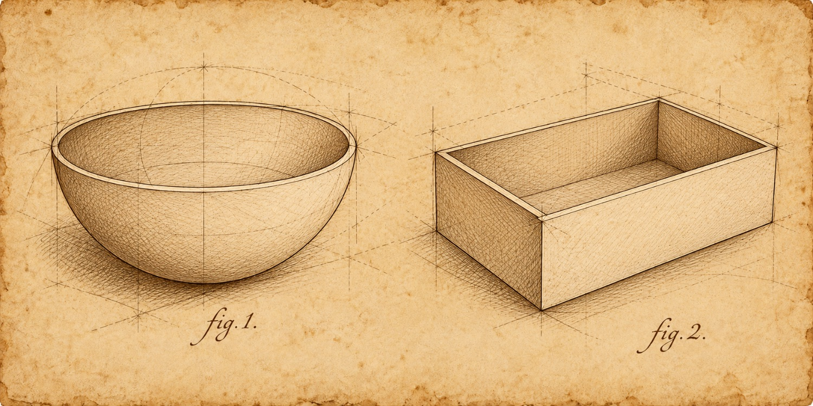
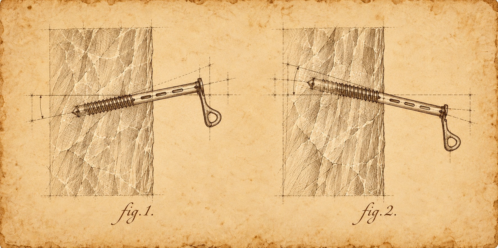
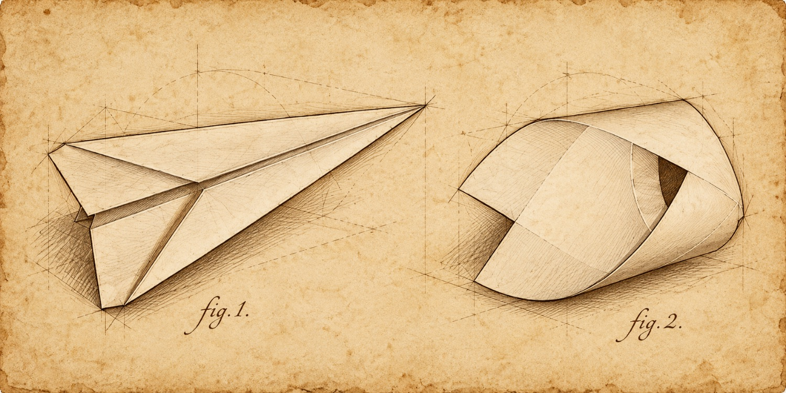

- Inngangur
- Tilgáta 1
- Tilgáta 2
- Tilgáta 3
- Samantekt
Tilgátur
Í þessu verkefni mun hópurinn setja fram þrjár tilgátur.
Í hvert sinn er sett fram rannsóknarspurning og tveir kostir í boði, merktir fig. 1. og fig. 2. Ræðið saman í hópnum og komist að sameiginlegri niðurstöðu áður en þið veljið.
Tilgáta er ekki ágiskun út í loftið – hún er rökstudd hugmynd um hvað gerist. Reynið því að útskýra af hverju þið veljið eins og þið gerið.
Tilgáta 1 – Að fljóta

Hafdís (fig. 1.) og Ástrós (fig. 2.) eru með ólíkar hugmyndir um hvernig best sé að láta hlut fljóta, þær vilja smíða lítinn bát. Þær eru ósammála um hvor lögunin er betri. Hver er ykkar tilgáta? Hvor lögunin hefur meiri flotkraft miðað við stærð?
Tilgáta 2 – Ísskrúfan

Ragnar (fig. 1.) og Lóa (fig. 2.) eru ósammála um hvernig best er að skrúfa ísskrúfu í jökul (svo hún beri sem mestan þunga). Hvor aðferðin teljið þið að sé traustari?
Tilgáta 3 – Skutlan

Nemandi sá kennarateymið vera að reyna að muna hvernig gera átti skutlu. Þegar Fanney náði að gera hina fullkomnu skutlu (fig. 1.) kom ónefndur nemandi og bað um blað. Hann braut það saman eins og einhvers konar hring eða kórónu. Síðan sagði hann: „Svona skutla flýgur betur en skutlan þín.“ Hver er tilgáta ykkar um það?
Tilgátur hópsins
Afritið þennan texta um tilgátur ykkar og skrifið inn í skjal sem merkt er sem verkefni 2 (í Classroom). Opnið síðan verkefni 3.